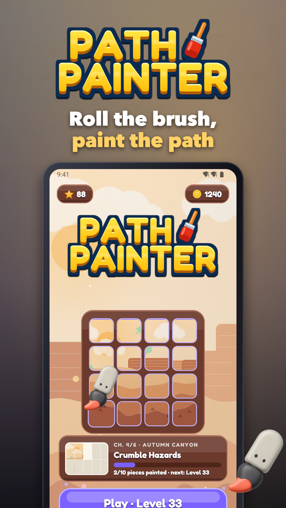
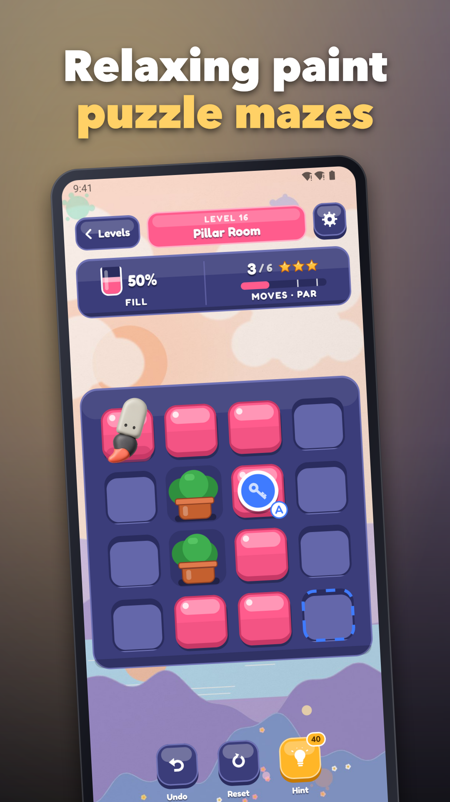
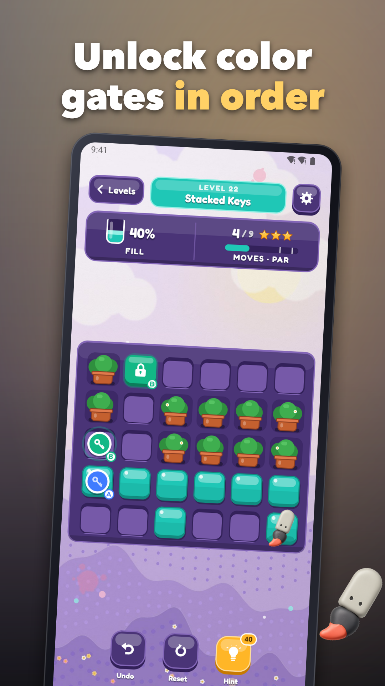
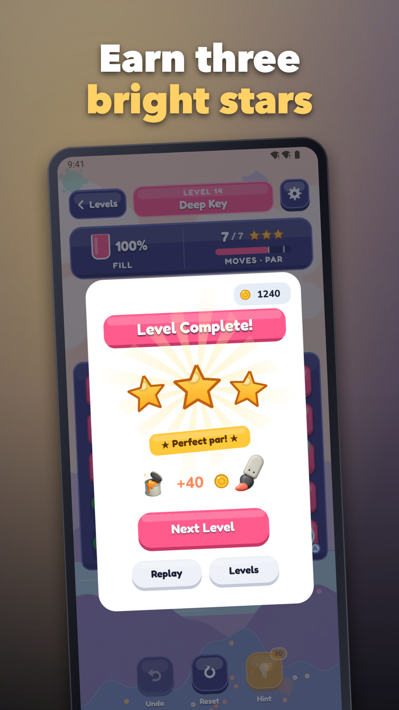
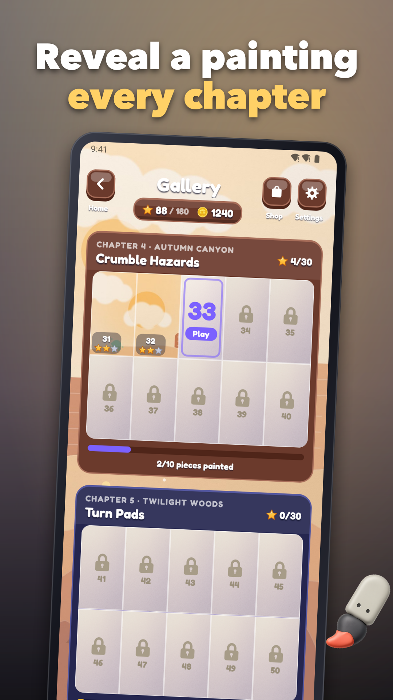
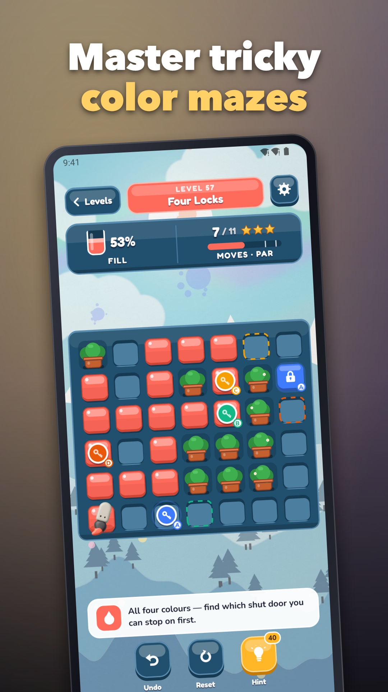

Paint Puzzle: Painty Path
A swipe paint puzzle: roll the brush through mazes and fill every tile.






Path Painter is a paint puzzle where one swipe sends your brush rolling until it hits a wall, painting every tile it crosses. Fill the whole board to win, and plan your route so you do it in as few swipes as possible.
Easy to learn, satisfying to solve. Sessions are short, so you can play one-handed in a spare minute or settle in for a longer run.
HOW IT PLAYS
• Swipe in any direction and the brush rolls until something stops it
• Every tile you cross gets painted
• Paint all the tiles to clear the level
• Undo as often as you like, or restart the level in one tap
60 HANDCRAFTED LEVELS IN 6 CHAPTERS
Each chapter adds a new idea to this swipe paint puzzle:
• Basics: learn how the brush rolls
• Switches & Gates: grab a key switch to open the door of the same colour
• Color Sequencing: choose the order carefully
• Crumble Hazards: cracked tiles break after one pass
• Turn Pads: arrow tiles bend the rolling brush
• Master Mazes: everything together, including two timed levels with a generous clock
Every other level is untimed, so you can think at your own pace.
STARS, COINS AND A GALLERY TO FINISH
• Earn up to 3 stars per level. Match the fewest possible swipes for a Perfect par
• Collect coins from every clear
• Each chapter is a painting split into pieces. Clear a level to reveal its piece, then collect all 6 paintings
• Use hints when you are stuck, paid with coins or an optional rewarded ad
• Unlock cosmetic themes and character skins with in-game coins
DAILY PUZZLE AND STREAKS
Come back each day for a daily challenge and build your streak.
MADE TO BE COMFORTABLE
• Colourblind mode
• Sound and haptics settings
• Plays fully offline, with no account or login. Progress is saved on your device only
• Optional Remove Ads purchase, plus coin packs
If you like a color fill puzzle that rewards planning ahead, this maze painting adventure is for you. Pick up your brush and start painting.
Support: jeets98e@gmail.com